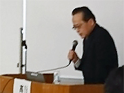
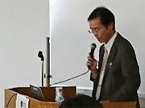
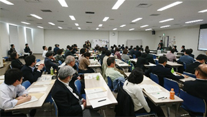

埼玉県消費者団体連絡会
3月9日（土）13時30分より、さいたま市浦和コミュニティセンター第15集会室にて、埼玉県消費者団体連絡会は内閣府消費者委員会とともに「消費者問題シンポジウムinさいたま」を開催、約80人が参加しました。
 今回のシンポジウムでは、高齢者の消費者被害の防止をメインテーマに、消費者被害を早期に発見、防ぎ、救済していくためのネットワークを地域に構築、地方消費者行政の現状などについて学びました。シンポジウムの最初に埼玉消団連の大久保幹事から「高齢化社会や、若者の消費者被害は増大の一途をたどっています。被害を早期に発見して、防ぎ、救済していくネットワークを地域全体で構築していけるよう、埼玉消団連も取り組んでいます。本日のシンポジウムを充実したものにしましょう」とあいさつをおこないました。
今回のシンポジウムでは、高齢者の消費者被害の防止をメインテーマに、消費者被害を早期に発見、防ぎ、救済していくためのネットワークを地域に構築、地方消費者行政の現状などについて学びました。シンポジウムの最初に埼玉消団連の大久保幹事から「高齢化社会や、若者の消費者被害は増大の一途をたどっています。被害を早期に発見して、防ぎ、救済していくネットワークを地域全体で構築していけるよう、埼玉消団連も取り組んでいます。本日のシンポジウムを充実したものにしましょう」とあいさつをおこないました。
1．基調講演「消費者委員会の活動と高齢者の消費者被害の防止」「埼玉県の事例報告」
消費者委員会委員長の髙巌さんを講師に、基調講演をおこないました。髙さんは始めに、現在、消費者委員会がおこなっている4つの取り組みを紹介。その後は個人的な見解としながら、脆弱な消費者を守り、公正で健全な市場を形成するために必要なことはなにか、必要な消費者教育はなにか、消費者が考えなければいけないこと、高齢者を見守る対象とだけ捉えず、見守る役割を持たせることの大切さなどについてお話しされました。基調講演後、埼玉県内における地域での見守り事例として、NPO法人埼玉消費者被害をなくす会が埼玉県より受託している「消費者被害防止サポーター活動推進事業と高齢者等見守り促進事業」について、青木統括員より報告をおこないました。
|  |  |
2．パネルディスカッション
続いて、消費者委員会委員長代理・NPO法人埼玉消費者被害をなくす会理事長の池本誠司さんがコーディネーターとなり、パネルディスカッションをおこないました。まず埼玉県の消費者被害の状況、消費者庁がおこなっている高齢者の消費者被害防止の取り組み、埼玉県における福祉部局と消費生活部局が一緒になった高齢者消費者被害防止の取り組み、埼玉弁護士会の消費者被害防止の取り組みについてパネリストから報告をおこなった後、埼玉県消費者被害防止サポーターに関する事例を会場発言として報告しました。前半の報告を受けて、論点整理をおこなった後、地方消費者行政の財源に関することを中心に意見交換をおこないました。

＊ご参加いただいたパネリストは次のとおりです。
埼玉県消費生活課課長 田中誠さん/埼玉県消費生活支援センター所長 村上文子さん/埼玉弁護士会消費者問題対策委員会委員長 神野直弘さん/消費者庁消費者教育・地方協力課課長 尾原知明さん